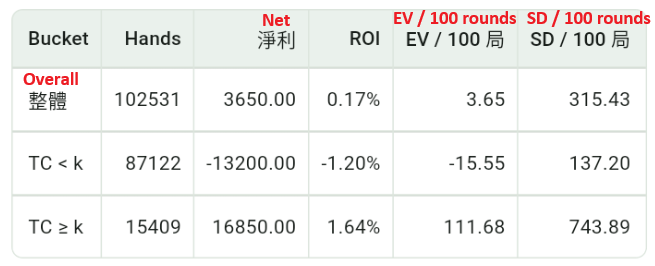

高牌原理
高牌比例上升時，玩家在 blackjack、double、insurance 與莊家爆牌率上會得到幾個結構性優勢。
- Blackjack 賠率是 3:2，所以 10 和 A 越多，玩家拿到 blackjack 的機率越高。
- 9、10、11 的 double 更容易打中高牌，而加倍會放大優勢。
- 莊家在 12-16 必須補牌，高牌越多，補到 10 而爆牌的機率越高。
- Insurance 本質上是在押下一張是不是 10，只有 10 密度夠高時才可能變成正期望值。
這也是為什麼 Hi-Lo 這類系統會把低牌視為 +1、高牌視為 -1：低牌被發掉後，剩餘牌堆的高牌密度相對上升，對玩家更有利。
App 模擬統計
以下結果由 app 以 Hi-Lo 搭配 Bet Ramp 模擬，將 true count、下注級距、EV 和波動分組比較。

Hi-Lo + Bet Ramp 的模擬結果
這組模擬使用 Hi-Lo 算牌並搭配 Bet Ramp，共跑 100000 局，並把門檻設定為 k = 2。結果可以看到，當 true count 進入較高區間，也就是 TC >= 2 時，整體期望值明顯高於 TC < 2 的區間。
這說明高牌比例上升時，玩家的優勢會更集中地出現；而 Bet Ramp 的核心，就是在這些高牌較多、優勢較好的時候提高下注。換句話說，想要真正利用算牌優勢，關鍵不只是知道牌堆變好，而是要在高 TC 時用下注級距把優勢放大。
不過，高 TC 區間雖然 EV 較高，標準差也明顯更大。這代表高牌多的時候雖然更有利，但短期波動也會更劇烈，所以資金管理和風險控制仍然很重要。